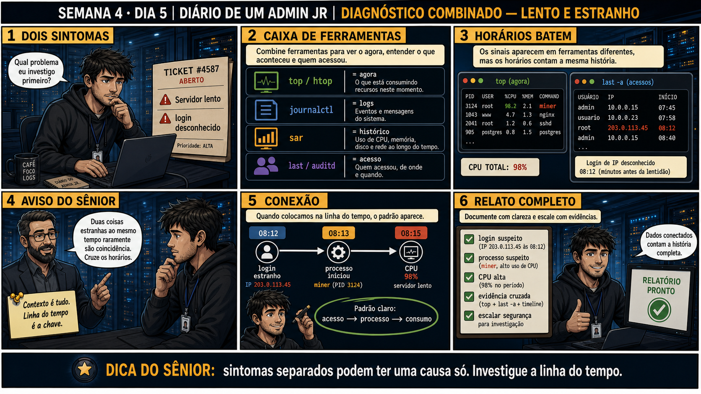

DIARIO DE UM ADMIN JR. | FASE 1 — LINUX, DO BÁSICO AO AVANÇADO
Antes de começar — 20 segundos de memória (Dia 4)
1. Ontem, qual foi o comando que mostrou os grupos reais de um usuário depois de qualquer mudança com usermod? 2. Esta semana inteira cada dia deu uma ferramenta pra um tipo de sintoma diferente — carga, log de serviço, disco, kernel, histórico, acesso, pacotes, usuários. Hoje dois sintomas aparecem juntos no mesmo chamado. O que isso muda na sua abordagem?
1.id teste_user. 2. Muda que você não escolhe UMA ferramenta e para — você combina as da semana (top/htop pra carga, journalctl pra serviço, sar pra histórico, last/auditd pra acesso) porque duas coisas estranhas ao mesmo tempo raramente são coincidência. Hoje é o dia de montar isso junto, não aprender algo novo.
🔗 Conecta com as últimas duas semanas inteiras: top/htop, journalctl, syslog,
dmesg, last/lastlog/auditd, sar, correlação entre servidores, pacotes e usuários — hoje você usa TUDO isso
junto, num único chamado com dois sintomas ao mesmo tempo.
🔓 Privilégio de hoje: investigação combinada usando o toolkit completo de duas
semanas. Você ganha a confiança de que sabe qual ferramenta usar pra cada tipo de pergunta, e como
cruzá-las quando os sintomas parecem não ter relação nenhuma.
Semana 4 · Dia 5 | Nível Júnior
Diagnóstico Combinado: Lento e Estranho ao Mesmo Tempo
duas coisas estranhas ao mesmo tempo raramente são coincidência — cruze os horários
ANTES DE ALTERAR, OBSERVE. DEPOIS DE ALTERAR, VALIDE.

1. O chamado
#4587PRIORIDADE ALTA17:15aberto por: monitoramento (Zabbix) + gestor de segurança
host: srv-app-03 · serviço: aplicação + acesso
"Dois alertas ao mesmo tempo: "servidor lento" e "login desconhecido detectado"."
Duas coisas estranhas ao mesmo tempo raramente são coincidência. Qual você investiga primeiro?
💡 Passa o mouse nas palavras destacadas pra ver uma dica rápida — clica se quiser a explicação completa com analogia.
2. O sênior te conta
🧑🏫 antes dos termos técnicos, a história de hoje
Hoje chegou um ticket com DOIS sintomas ao mesmo tempo: "servidor lento" e "login desconhecido
detectado". O Júnior me perguntou: "qual eu investigo primeiro?". Respondi: "os dois. Ao mesmo tempo.
Duas coisas estranhas juntas raramente são coincidência."
Fizemos o que aprendemos nas últimas duas semanas, tudo junto pela primeira vez: top mostrou
um processo chamado miner consumindo 98,2% de CPU, nome que não batia com nada do padrão do
sistema. last -a mostrou um login de IP desconhecido às 08:12 — minutos antes da lentidão
começar. Cruzando os horários: login estranho → processo suspeito iniciado → CPU saturada, três eventos
alinhados numa sequência só.
O Júnior quis matar o processo e fechar o ticket na hora. Segurei: quando a causa envolve acesso não
autorizado, matar o processo resolve só o SINTOMA — a causa real (como esse acesso aconteceu) continua
sem resposta. Isso não é mais um chamado técnico comum, é um caso que precisa escalar pra segurança:
trocar credenciais, auditar outros acessos daquele IP, entender o que mais foi feito. Foi o dia em que
todo o toolkit de duas semanas — carga, log, histórico, acesso — trabalhou junto pela primeira vez.
3. Decodificador de conceitos
Clica em qualquer termo pra ver a definição completa e uma analogia do dia a dia:
4. Ferramentas e leitura da evidência
Comando
O que observar e por que importa
top
Mostra um processo (miner) consumindo 98,2% de CPU, nome fora do padrão dos processos conhecidos.
last -a
Mostra um login de IP desconhecido (203.0.113.45) minutos antes da lentidão começar.
$ top
PID USER %CPU %MEM COMMAND
3124 root 98,2 2,1 miner
$ last -a
usuario IP início
root 203.0.113.45 08:12 (login de IP desconhecido)
admin 10.0.0.15 07:45
Cruzando os horários: login desconhecido às 08:12, processo miner iniciado (PID 3124) logo
em seguida, CPU em 98% minutos depois — três eventos alinhados numa sequência só.
5. Laboratório guiado — pegue na mão, comando por comando
Segurança: execute os testes apenas em VM descartável e confirme nomes de discos, hosts e arquivos antes de cada comando.
Ação: Simule um incidente combinado: gere carga de CPU e confira acessos ao mesmo tempo.
yes > /dev/null &
last -a
Resultado esperado: dois conjuntos de dados coletados na mesma janela de investigação.
Por que fizemos isso: praticar coletar duas fontes ao mesmo tempo, mesmo sintéticas, é o treino necessário pra fazer isso rápido quando um chamado real com dois sintomas chegar.
Cilada comum: investigar as duas fontes em momentos separados, sem anotar horários — sem essa sincronização, fica impossível cruzar depois.
Ação: Monte uma linha do tempo cruzando os dois conjuntos de dados.
# não é comando único — combine os horários do top e do last -a
# ex: "08:00 login registrado (last) → 08:01 carga de CPU iniciada (top)"
Resultado esperado: prática de montar timeline cruzada, mesmo com dados sintéticos.
Por que fizemos isso: essa é a habilidade central de toda a Semana 4 — pegar fontes diferentes e montar uma narrativa única e coerente, mesmo sem incidente real acontecendo.
Cilada comum: forçar uma "conexão" entre dois eventos que não têm relação real só porque estão próximos no tempo — nem toda coincidência é causa raiz, use julgamento.
🧑🏫 Aqui entra o Mentor (em breve): se você não tiver certeza de qual ferramenta usar pra um sintoma específico, este é o ponto onde o chat com o Sênior-IA vai ajudar a decidir.
Ação: Revise todo o toolkit das Semanas 3 e 4, de memória, sem consultar nada.
Resultado esperado: lista pessoal de referência rápida (carga → top/htop, log → journalctl, histórico → sar, acesso → last/auditd).
Por que fizemos isso: recuperar essa lista de memória, sem olhar, é o teste real de que você absorveu o toolkit — não só reconhece os comandos quando vê, mas lembra sozinho na hora do chamado.
Cilada comum: confundir qual ferramenta responde "agora" vs "histórico" — é exatamente essa distinção (Dia 1 desta semana) que mais gera confusão sob pressão.
Ação: Escreva um relatório de incidente completo, incluindo critério de escalonamento.
# não é comando de shell — é o relatório
# ex: "Sintomas: lentidão + login desconhecido. Causa: acesso não autorizado + processo miner. Ação: processo encerrado. Escalado: sim, segurança (credenciais + auditoria)."
Resultado esperado: relatório com causa, evidência cruzada, ação tomada e critério de escalonamento.
Por que fizemos isso: incluir explicitamente o "por que escalei" (ou "por que não escalei") é o que transforma um relatório técnico num documento que outra pessoa consegue auditar depois.
Cilada comum: tratar "encerrei o processo" como o fim da investigação — quando envolve acesso não autorizado, o encerramento do processo é só o primeiro passo, não o último.
Ação: Documente o fechamento da Semana 4 com autoavaliação honesta.
# não é comando de shell — é a autoavaliação final
# ex: "Domino: top/htop, journalctl, sar. Preciso praticar mais: cruzar auditd com outras fontes rapidamente."
Resultado esperado: autoavaliação honesta, reproduzindo o espírito do painel 6 da prancha de hoje.
Por que fizemos isso: reconhecer o que ainda não está sólido é tão importante quanto celebrar o que já domina — é isso que direciona o que revisar antes da próxima semana.
Cilada comum: escrever uma autoavaliação genérica ("aprendi bastante") sem nomear ferramentas específicas — sem especificidade, a autoavaliação não ajuda a decidir o que revisar.
CENÁRIOAção: Encerre o processo de carga sintética que você criou para o exercício, deixando o servidor limpo.
kill %1
top -bn1 | head -5
🔍 Detalhar esse comando
top
Normalmente roda em modo interativo, atualizando a tela ao vivo.
-b
Modo batch: imprime a saída como texto simples, sem interface interativa — necessário para poder usar com pipe.
-n1
Limita a UMA única atualização/captura, em vez de rodar continuamente.
| head -5
Mostra só as 5 primeiras linhas dessa captura única — o cabeçalho com os processos de maior consumo.
Resultado esperado: o processo yes não aparece mais na lista de carga do top.
Por que fizemos isso: esse processo foi criado só pra você ter algo pra cruzar com o last -a no exercício — sem encerrar, ele fica consumindo CPU de verdade muito depois da aula ter acabado.
Cilada comum: no dia da revisão geral é fácil esquecer esse detalhe, já que a atenção está nos exercícios mentais de correlação, não nos comandos de shell.
Se o seu resultado foi diferente
"bash: kill: %1: no such job" → use pkill yes para matar por nome, já que o número do job pode ter mudado se você rodou outros comandos em background durante a semana.
6. Antes de ver as opções — tenta responder
🧠 Recall ativo: quais quatro categorias de ferramentas formam o seu toolkit completo até agora, e
o que cada uma responde?
top/htop = agora ·
journalctl = logs ·
sar = histórico ·
last/auditd = acesso. Combinar as quatro categorias é o que resolve um chamado com sintomas
aparentemente desconectados.
QUESTÃO 1 de 3
7. Questão comentada — clica numa alternativa
O ticket reporta "servidor lento" E "login desconhecido" ao mesmo tempo. Qual é
a abordagem correta pra investigar os dois sintomas?
💡 Analogia do Sênior para Fixar: O checklist de triagem do Sênior é o protocolo de trauma da emergência: checa primeiro as vias aéreas (CPU), circulação (RAM), hemorragia (Disco) e comunicação (Rede).
QUESTÃO 2 de 3 — cenário de erro real
7.1 login desconhecido → processo miner → CPU 98% — qual é a conclusão correta?
Os três eventos, cruzados por horário, formam uma sequência clara: acesso não reconhecido, seguido de
um processo suspeito consumindo praticamente toda a CPU do servidor.
Qual é a leitura correta dessa sequência de evidências?
💡 Analogia do Sênior para Fixar: Interpretar métricas de forma combinada (CPU alta + Disco saturado) é como febre alta com tosse: apontam para uma causa raiz conjunta (ex: swapping severo por falta de RAM).
QUESTÃO 3 de 3 — detalhe que confunde todo iniciante
7.2 "Já sei a causa, posso matar o processo e fechar o ticket, certo?"
Com a causa raiz identificada (acesso suspeito + processo miner), um colega sugere encerrar o processo e
fechar o chamado imediatamente.
Essa é a ação completa e correta pra esse cenário?
💡 Analogia do Sênior para Fixar: Documentar o diagnóstico no chamado com evidências de antes e depois é o laudo médico assinado: encerra o incidente com respaldo técnico irrefutável.
8. Procedimento profissional
Liste todos os sintomas reportados no chamado, sem descartar nenhum de antemão.
Investigue cada sintoma com a ferramenta certa (carga, log, histórico, acesso).
Cruze os horários de todas as evidências coletadas numa linha do tempo única.
Identifique se há uma causa raiz comum conectando os sintomas.
Documente com clareza e escale pra segurança se envolver acesso não autorizado.
Prevenção — o que evita repetir esse tipo de problema
Padronize um checklist único de "incidente com múltiplos sintomas" no runbook do time,
garantindo que ninguém investigue só o sintoma mais óbvio e feche o chamado cedo demais. Documente critérios
claros de quando escalar pra segurança (qualquer acesso não reconhecido, por padrão), pra essa decisão não
depender do julgamento individual de quem está de plantão.
9. Validação e encerramento
Ambos os sintomas foram investigados, não só um deles.
Os horários de todas as evidências foram cruzados numa linha do tempo única.
A causa raiz comum foi identificada com evidência, não suposição.
O caso foi escalado corretamente, já que envolvia acesso não autorizado.
Rollback e limites
Encerrar um processo suspeito é reversível (pode ser reiniciado se necessário),
mas revogar acesso e trocar credenciais tem consequência real — sempre com aprovação e dentro do
procedimento de segurança da equipe, nunca decidido sozinho no calor do momento.
💡 Sobre repetição espaçada: "sintomas separados podem ter uma causa só" fecha
a Semana 4 conectando tudo: carga (Semana 3, Dia 1), logs (Semana 3 inteira), histórico (hoje, Dia 1) e
acesso (Semana 3, Dia 5) — o toolkit completo trabalhando junto pela primeira vez. O Anki vai conectar tudo.
10. Resposta final
Alternativa correta: B. Nesta aula, a decisão correta foi investigar
os dois sintomas em paralelo, cruzando os horários de cada evidência. O ponto central do caso é este:
sintomas separados podem ter uma causa só — investigue a linha do tempo antes de tratar como problemas
desconectados.
🔓 O que você desbloqueou hoje
O toolkit completo de investigação combinada, fechando a Semana 4 e o bloco
inteiro de Monitoramento e Logs. Semana 5 começa um novo território: diagnóstico avançado de recursos com
vmstat — memória e swap além do que o top consegue mostrar.